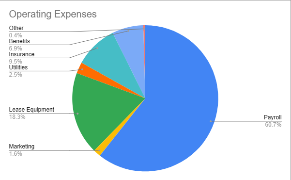
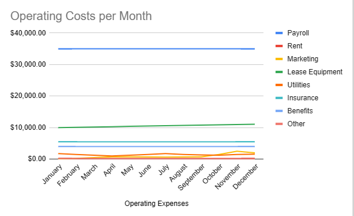
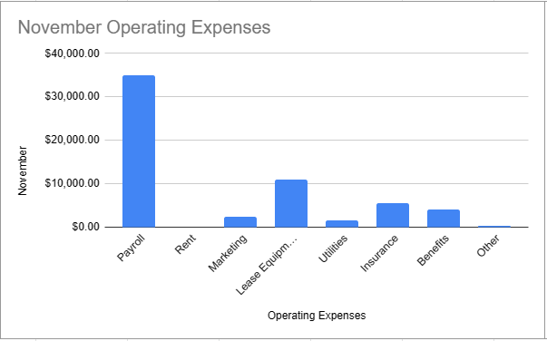
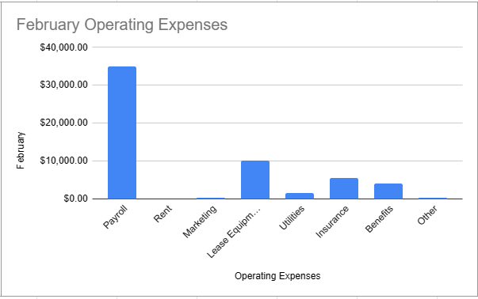

Here are some graphs to prove our financials




Our Operating Expenses / Net Income can be found at https://docs.google.com/spreadsheets/d/1opHBLc-areyxhR7SEPBqs8_4mqLKgX2LDkUxNOQr8w8/edit?usp=sharing.
Check out the rest of our site!
V1.0
V1.1 (Current)
V1.5 (Unreleased)
Read our Product reviews!
ANOTHER DISCLAIMER: This website is for a school project. No information on this site should be taken literally or used in real life!!!
Copyright (©) 2023 Automatic Bed Maker® and Co. All Rights Reserved